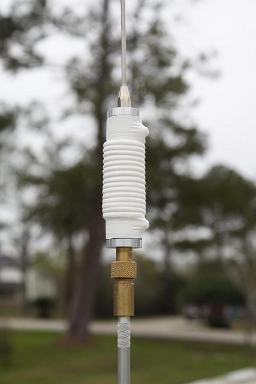
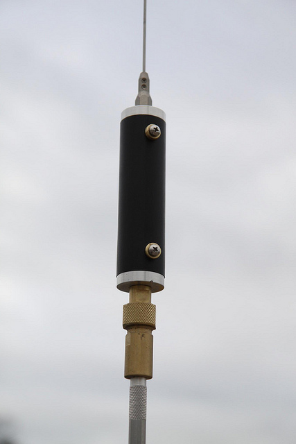
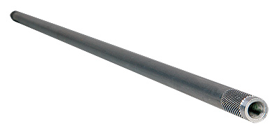
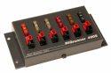
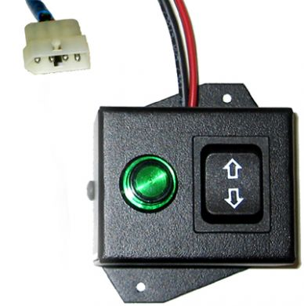
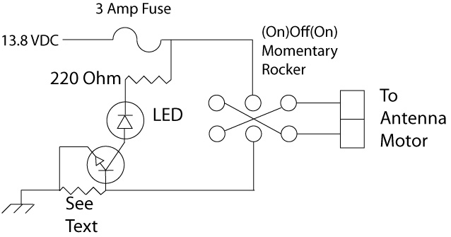
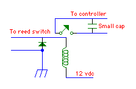
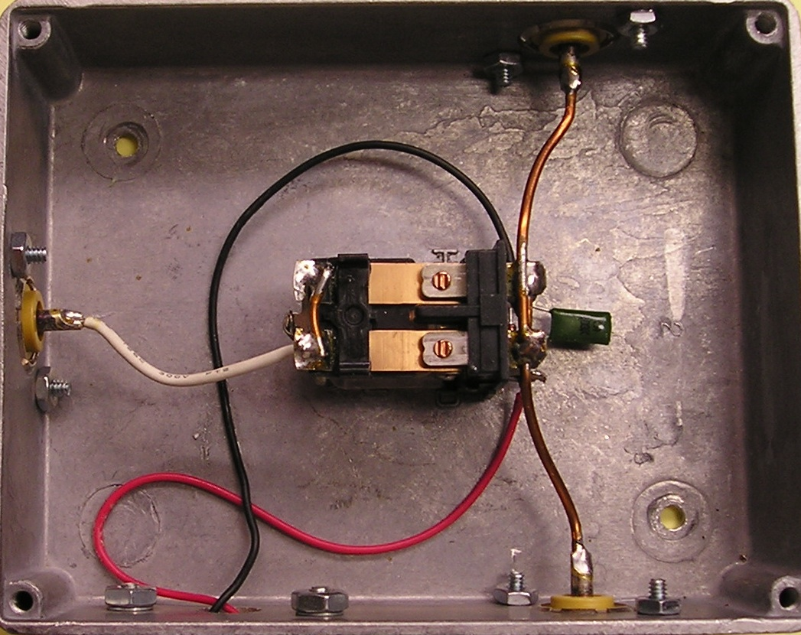
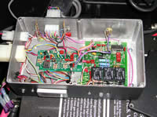

Basics
Starting with the dawn of amateur radio, it was the rule (not the exception) to build your own gear, including transmitters, receivers, antennas, amplifiers, and even test gear. As the popularity of radio grew, manufacturers filled part of the need by supplying receiving gear. Yet, for the most part, antennas and transmitting gear were still home-brewed. It wasn't until the early 1950s that manufacturers started to fill the modern needs of us amateurs. Transceivers, as we know them today, didn't make an appearance until the late 50s. By 1965, no less than 10 companies were answering the call.
Unfortunately, along with these changes, retailers specializing in the requisite home-brewing parts have nearly vanished. Radio Shack is a prime example — once a major supplier of electronic parts, it isn't much more than a cellphone sales office nowadays. Nonetheless, home brewing is not dead; it has just evolved.
While a few can sit down, design, and build the gear they need, most have to settle for easier projects. What we'll tackle here does require some mechanical and electrical ability, and at least some measure of hand tools. You don't need a drill press, but it would help to have one. You'll need a soldering iron (leave the gun at the door), screwdrivers, needle-nose pliers, cutters, and the ubiquitous DVM (digital voltmeter). Of course, if you don't own any of these things, it might behoove you to remain an appliance operator — but that's not the essence of amateur radio.
Antennas, on the other hand, require a bit more engineering prowess and machine tools not normally owned by your average amateur. This is especially true when it comes to loading coils. There are some simple workarounds for those who wish to get their feet wet, and you'll find those below.
Suppliers
Home brewers have several reliable suppliers worth knowing:
- Aaron's General Store — Large stock of both inch and metric bolts, nuts, washers, and fasteners, including security fasteners.
- Circuit Specialties — Home brew parts, test equipment, soldering stations, and power supplies.
- Commerce Metals / Speedy Metals / Metals Depot — Aluminum and stainless steel rods, tubes, bars, plate, and sheet stock.
- Micro Fasteners — Set screws and fasteners in unusual sizes.
- All Electronics / All Spectrum Electronics — New, used, pulls, and overstock of electronic parts, connectors, LEDs, and fans.
- Mouser, Newark, and Digikey — First-line retailers of all things electronic. If you can't find a part here, you can't find it.
Basic Antennas
Over the years, I've built dozens of different antennas. Most used commercial parts (modified and raw), some used home brew parts, and a few defied description. If I have any regrets, it is that I didn't take pictures of them all.
The basic HF mobile antenna scenario really isn't complicated. You need some sort of mount, a mast, a coil, a whip, and (hopefully) some sort of matching device. The problem nowadays is you just can't find the individual parts. During the late 70s, I worked for CW Electronics in Denver. We sold just about every kind of amateur radio gear you could name, including the individual parts to repair them. One of the requisite parts for any mobile antenna (save for 10 meters) was a loading coil. At the time, the largest manufacturer was B&W (Barker & Williamson), whose trade name for their coils was Airdux. A piece of the 2004T was enough coil to build two 20 meter coils, and cost less than $8. A quick check of their web site today shows the current price at $65 each. Their 4804TL now sells for $500 each. It is no wonder that companies like Texas Bug Catcher opted to wind their own.
Whatever avenue you take, you need to bone up on antenna design. The first place to start is the ARRL Handbook. If you want to see the ultimate in home-brew antennas, look up VE6AB (Jerry Clement) in the photo galleries — a first-class machinist who has had articles in QST. He represents what's possible when you combine engineering knowledge with machine-shop skills.
Home-Brewing a Loading Coil


David Stall, AE5DS, asked Breedlove Machine Shop to make him an elongated version of their 1.5-inch diameter HV insulator made for use with an auto-coupler. The screws are threaded into the end bosses, which are bored for 3/8×24, making them compatible with existing antenna hardware.
The wire used was #14 AWG, but it looks much bigger because David used some nylon rope as a spacer to keep the coil turns evenly spaced. As long as moisture doesn't get in, that's a good way to keep the turns evenly spaced. The tape is vinyl electrical tape, but Rescue Tape might be a better solution as it seals out moisture better.
One thing to remember if you duplicate this method is to keep the coil turns away from the end bosses to minimize Q losses. An online coil calculator can be used to approximate the required turns needed before ordering the requisite length form. All in all, it is a novel idea, one that is easily duplicated, and the completed antenna is certainly full of DIY pride.
Masts
I can't tell you how many different masts I have used over the years. I've used fiberglass ones with copper wire buried inside of them, steel, aluminum, copper water pipe, stainless steel, chrome-moly, and even wood. Lengths varied from a foot or so to one 10 feet long. DX Engineering sells ready-made masts in several different lengths, and they're reasonably inexpensive.
You can homebrew your mast too. Mike Brueggemann, K5LXP, has the answer on his web site. For less than $10 you can buy enough material to build two masts using his method. While copper pipe works well, DIY steel tubing will work too. The 1/2-inch diameter material will accept a 3/8×24 bolt if you cut off the head. The bolt can be brazed in, along with a nut to tighten it down. A coat of paint is all that's needed.
Brackets

Homebrewing a ball mount is out of the question for most amateurs. The mount shown required a drill press, a large machine vise, a 3-inch Forstner bit (almost $50), and a lot of patience. It is made out of self-reinforcing polyphenylene, better known as TecaMax. It snatches easily — hence the machine vise — and it will melt if it gets too hot, so slow drilling is a requirement. It took 15 minutes to drill through a one-inch piece of material.
The dielectric strength of TecaMax goes beyond 1 GHz, as do Delrin and Nylon. All of them can be worked with normal woodworking tools and drill well except for the snatching mentioned above. For holes over 3/8 inch, use a Forstner or spade bit and go slow. If you thread it, use a bit one number smaller than recommended and back out often. Don't use fine thread sizes. Treat it like soft aluminum.
One often-recommended method to check the dielectric strength of an unknown plastic is to place a sample in the microwave and turn it on for a few seconds. That may indeed work, but you have to be very careful. Some forms of PVC will explode into flames after just a couple of seconds. Know your materials before testing.
The Electrical Projects: Intermission
What follows are a few simple electrical projects anyone can build. You'll need a decent soldering iron (no guns please), a few simple hand tools, and a little patience. Most can be built dead-bug style, or by using perfboard. More industrious folks might resort to building their own circuit boards, but that's just butter on the bread in these cases.
There are two places you don't want to scrimp: the mounting box, and the switches. The aluminum boxes shown in the following sections are made by Hammond and are sold by Digikey and Mouser. They come in a variety of sizes and finishes. Their cover screws are a standard 8×24 and can be replaced with slightly longer screws to attach mounting brackets.
Digikey and Mouser also sell miniature Switchcraft switches. While big ugly rocker switches from your local auto parts store will work, neatness counts. Make sure you understand switch nomenclature. The term (on)off(on) means the switch is center-off, with momentary-on positions in a DPDT configuration. Read catalog descriptions carefully; it is easy to order the wrong configuration.
Manual Override for Antenna Controllers

Most automatic antenna tuners incorporate dynamic braking to minimize over-travel by shorting out the motor leads. Because the motor leads are grounded by the controller, it is impossible to parallel a manual control directly. There is a way around the problem, but you have to be willing to slap a few parts together.
The circuit requires two 12-volt relays and a center-off, spring-loaded SPDT switch. It is straightforward in both wiring and simplicity. The relays can be almost anything, as the current is seldom over 1 amp. It can be easily built into a box no bigger than 2 inches square.
There is one caveat worth considering: most controllers remember where they were after the last tune. If you manually move the antenna, and then attempt to use automatic control, there is a chance the controller will move the antenna in the wrong direction. You can either let the controller run and it will eventually find the right spot, or keep track of manual movements and tell the controller your new position (if it supports that feature).
Amplifier Bypass Circuit

The DC motor in all remotely tuned antennas operates the same basic way: it reverses the polarity of the power fed to the antenna, causing it to turn in one direction or the other. During the tuning process, the SWR remains high until resonance is achieved. This is why low power is used during the tuning process. If an amplifier is being used, it must be turned off or bypassed during tuning. Most manual and automatic controllers don't have an amplifier bypass — if yours doesn't, this simple circuit will do it for you.
The two parallel diodes act as an OR gate. If either motor lead has positive 12 volts applied to it, the relay will operate. If the amplifier's PTT line is connected to the normally closed contacts of the SPDT relay, it will be bypassed during the tuning process. The capacitor causes a delay in the relay's release to allow for some jogging during the tuning process.
Just about any 12-volt SPDT relay will work, even a small reed relay. A 2N3904 is a good choice for the switching transistor, and 1N4004 for the diodes. The capacitor's value determines the relay's dropout delay. A 100 µF (approximately 25 VDC) will give about a 3 to 5 second delay.
This circuit is about as simple as you can make it. The actual time delay relies on the base-to-emitter leakage value, which varies with the transistor used. If the delay is too long, a 100 kΩ resistor across the capacitor will solve the problem. A larger capacitor will increase the delay (don't go larger than 1,000 µF). A smaller resistor (if needed) will shorten the delay (don't go lower than 20 kΩ).
The Simple Rocker Switch Controller

Manual controllers often sell for $70 or more, and basically they're not much more than a DPDT switch. The circuitry isn't patented; there's nothing special or exotic about it; and you can easily duplicate the effort. How much you spend depends on how fancy you want it to be.
Manual controls have a few drawbacks. You have to keep an eye on your SWR readout as you adjust the antenna, and the operation is distracting while you're under way. In some cases, an external SWR bridge or wattmeter is required. This is true of the Icom IC-706 if you trick it into thinking an AH-4 is connected (10-watt carrier), as it takes about 30 watts before the built-in SWR meter will operate.
The simple rocker switch shown (the “i-Box” which used to be made by High Sierra) consists of a DPDT rocker switch configured as (on)off(on). Pushing the switch causes the antenna to move up or down. Inside are a few more components which tell the Icom IC-706 to transmit a 10-watt carrier.
Power for the unit and the antenna comes from the Icom's tuner or accessory port. Icom specs clearly state the maximum current draw is one amp, which is easily exceeded if the antenna stalls at one end. If the supply is shorted, a circuit trace will often fail before the internal fuse blows. Using a RigRunner or similar power block to power the antenna is the correct solution, but does require rewiring the controller. Using the 706 version on an Icom IC-7000 can stress an open-collector output inside the main CPU and can cause it to fail.
For most remote antennas drawing up to 500 milliamps of run current, a 0.72-ohm, 2-watt resistor is close enough for the current-sensing element. If you have trouble finding one, use three 2-ohm, 1-watt resistors in parallel. All of the components can be mounted dead-bug style in an aluminum case. If you're resourceful, you can build the complete control for less than $15.
Debouncer Circuit

Proper RF choking of the control leads is an often-overlooked requirement. Sometimes, even if you do a good job of building the choke, you still get miscounts on controllers which use a reed switch. The reason is that most antenna reed switches only switch states (off to on, and back off) for only a fraction of a second — typically less than 100 milliseconds. Even though the logic is fast enough to catch the pulse, capacitance in the wiring and a little residual RF can cause a miscount.
The debouncer circuit shown elongates and debounces the pulse. The size of the capacitor varies depending on the controller, but usually 0.5 µF or 1.0 µF is large enough. You don't want one too big or the count will be missed altogether. Just about any small, 12-volt, low-power relay with a coil current of less than 200 milliamps will work. The diode can be just about any 1-amp power diode — 1N4008 for example.
Antenna Switch


Modern mobile transceivers are often referred to as DC to daylight radios, because they usually cover 160 meters through 70 centimeters. Being as small as they are, there isn't a whole lot of room for antenna connectors. Often, only two connections are provided: one for 160 through 6 meters, and the other for VHF/UHF. If you use separate antennas for VHF and UHF, diplexers are available to split the one port into two. However, if you use a separate antenna for the HF bands and another for 6 meters, you need an antenna switch.
Commercial 12-volt powered remote antenna switches like the MFJ-4712 ($80) will need modification for mobile use. The solution is to make one. If you're frugal, it'll cost you about $20.
The box is a Hammond cast aluminum one, about 3×4×2 inches. The relay is a DPDT, removed from its plastic enclosure and screwed into the bottom of the box. The poles are wired in parallel and connected to the output SO-239 connectors with short pieces of #14 copper wire. All of this is done to keep insertion losses low. Even then, the throughput SWR rises slightly (1.2:1 at 54 MHz). A diode and small capacitor are attached across the coil terminals to eliminate back-EMF when the switch is turned off — connection polarity is important. Overly long leads cause insertion losses to go up and increase SWR on the higher bands.
Amplifier Remote Control

The front-mounted switch is the amplifier control switch. The violet LED indicates power on — if it goes out and the switch is on, it means you've over-driven the amplifier.
The rear switch is a DPDT (On-Off-On). When the switch is forward, all systems are off. When the switch is in the center position, it activates the video from the Icom IC-7000 and applies it to the TVandNav2Go video converter. When it is moved to the rear position, it also activates the remote antenna switch.
The interconnecting cable is a 12-conductor #20 with shield. While overkill, it allows room for future additions. There are Molex connectors on both ends for ease of installation. Powering the radio, amplifier, and the ancillary devices from the same power and grounding source eliminates ground loop problems.
Power for the remote control is taken from a four-pin header plug on the SG500. Pin four of that header plug is supply voltage. Although that pin is protected by an internal 5-amp fuse, if you short the pin to ground, a circuit trace will fail before the fuse opens. Extra care is needed to make sure this pin is not shorted to ground during installation. The repair is both tedious and time-consuming, and expensive if the factory does the work.
Other Things: The Rebundled Controller Box


Every now and then, every piece of amateur gear has to be worked on, or you experiment a lot. The box shown contains a reboxed automatic antenna controller, hour meter, indicator LEDs, and all of the interconnecting cables. The Molex at the top of the photo is the cable to the front-mounted control box. The smaller Molex goes to the antenna motor, and the other Molex carries the power and control wires from the IC-7000's Tuner port. There is also a cable going to the remote port on the SGC SG500 amplifier, which includes a fuse holder (just a pair of 1/4 spade lug connectors with an ATC 3-amp fuse).
The box is held down to the amplifier via existing 8×24 tapped holes which hold the cover on. Behind the amplifier is the main body of the IC-7000, bolted to the SG500's optional cooling fan assembly. The complete package is held to the trunk floor by two brackets. Remove the bracket hold-down knob nuts, 8 connectors (two coax, three Molex, Icom remote cable, and two 120-amp PowerPoles), and the whole assembly can be removed and set on the work bench in less than a minute.
Before you start tearing your stuff apart to rebox it, you need to know a few things. First, the warranty is gone. You'll need schematics (not always easy to find), a DVM, more than a simple electronics background, and the necessary hand and power tools. Cost is also an object. The box, its innards, the various connectors, Zener diodes (meter protection), capacitors, and hardware come to about $350. If it doesn't do anything else of benefit, it is convenient when service is required.
Modern Considerations
The home brew tradition in amateur radio is alive and well, but the landscape has shifted. PCB design software (KiCad is the leading free option) and low-cost board fabrication services (several Chinese services produce prototype quantities for a few dollars) mean that even a moderately skilled hobbyist can now produce proper printed circuit boards. The “dead bug” construction Alan mentions is still entirely valid for one-off projects, but for anything you plan to replicate or use long-term, a proper PCB is worth the effort.
3D printing has opened up enclosure options that didn't exist when this content was written. Custom enclosures that fit specific mounting locations, with exact cutouts for connectors and controls, can be designed in a few hours and printed for a few dollars in material. PETG is a better choice than PLA for automotive applications — it handles heat much better and doesn't embrittle in cold climates.
The Hammond aluminum boxes Alan recommends are still the right choice for RF-carrying circuits. 3D printed enclosures have no shielding. For amplifier bypass circuits, antenna switches, and other circuits that handle RF or are near RF, stick with aluminum. For control boxes that carry only DC signals, 3D printing is perfectly appropriate.
The fundamental philosophy here — build what you need, use quality materials, make it serviceable, and document what you built — is as valid now as it was when Alan first wrote it. The tools and materials have changed; the discipline hasn't.